A Galbraith's radial plot is produced on a logarithmic or a linear scale.
plot_RadialPlot(
data,
na.rm = TRUE,
log.z = TRUE,
central.value,
centrality = "mean.weighted",
mtext,
summary,
summary.pos,
legend,
legend.pos,
stats,
rug = FALSE,
plot.ratio,
bar.col,
y.ticks = TRUE,
grid.col,
line,
line.col,
line.label,
output = FALSE,
...
)data.frame or RLum.Results object (required):
for data.frame two columns: De (data[,1]) and De error (data[,2]).
To plot several data sets in one plot, the data sets must be provided as
list, e.g. list(data.1, data.2).
logical (with default):
excludes NA values from the data set prior to any further operations.
logical (with default):
Option to display the z-axis in logarithmic scale. Default is TRUE.
numeric: User-defined central value, primarily used for horizontal centring of the z-axis.
character or numeric (with default): measure of centrality, used for automatically centring the plot and drawing the central line. Can either be one out of
"mean",
"median",
"mean.weighted" and
"median.weighted" or a
numeric value used for the standardisation.
character: additional text below the plot title.
character (optional): add statistic measures of centrality and dispersion to the plot. Can be one or more of several keywords. See details for available keywords.
numeric or character (with default):
optional position coordinates or keyword (e.g. "topright")
for the statistical summary. Alternatively, the keyword "sub" may be
specified to place the summary below the plot header. However, this latter
option is only possible if mtext is not used.
character vector (optional): legend content to be added to the plot.
numeric or character (with
default): optional position coordinates or keyword (e.g. "topright")
for the legend to be plotted.
character: additional labels of statistically important values in the plot. One or more out of the following:
"min",
"max",
"median".
logical: Option to add a rug to the z-scale, to indicate the location of individual values
numeric:
User-defined plot area ratio (i.e. curvature of the z-axis). If omitted,
the default value (4.5/5.5) is used and modified automatically to optimise
the z-axis curvature. The parameter should be decreased when data points
are plotted outside the z-axis or when the z-axis gets too elliptic.
character or numeric (with default):
colour of the bar showing the 2-sigma range around the central
value. To disable the bar, use "none". Default is "grey".
logical: Option to hide y-axis labels. Useful for data with small scatter.
character or numeric (with default):
colour of the grid lines (originating at [0,0] and stretching to
the z-scale). To disable grid lines, use "none". Default is "grey".
numeric: numeric values of the additional lines to be added.
character: labels for the additional lines.
logical:
Optional output of numerical plot parameters. These can be useful to
reproduce similar plots. Default is FALSE.
Further plot arguments to pass. xlab must be a vector of
length 2, specifying the upper and lower x-axes labels.
Returns a plot object.
Details and the theoretical background of the radial plot are given in the
cited literature. This function is based on an S script of Rex Galbraith. To
reduce the manual adjustments, the function has been rewritten. Thanks to
Rex Galbraith for useful comments on this function.
Plotting can be disabled by adding the argument plot = "FALSE", e.g.
to return only numeric plot output.
Earlier versions of the Radial Plot in this package had the 2-sigma-bar
drawn onto the z-axis. However, this might have caused misunderstanding in
that the 2-sigma range may also refer to the z-scale, which it does not!
Rather it applies only to the x-y-coordinate system (standardised error vs.
precision). A spread in doses or ages must be drawn as lines originating at
zero precision (x0) and zero standardised estimate (y0). Such a range may be
drawn by adding lines to the radial plot ( line, line.col,
line.label, cf. examples).
A statistic summary, i.e. a collection of statistic measures of centrality and dispersion (and further measures) can be added by specifying one or more of the following keywords:
"n" (number of samples),
"mean" (mean De value),
"mean.weighted" (error-weighted mean),
"median" (median of the De values),
"sdrel" (relative standard deviation in percent),
"sdrel.weighted" (error-weighted relative standard deviation in percent),
"sdabs" (absolute standard deviation),
"sdabs.weighted" (error-weighted absolute standard deviation),
"serel" (relative standard error),
"serel.weighted" (error-weighted relative standard error),
"seabs" (absolute standard error),
"seabs.weighted" (error-weighted absolute standard error),
"in.2s" (percent of samples in 2-sigma range),
"kurtosis" (kurtosis) and
"skewness" (skewness).
0.5.9
Dietze, M., Kreutzer, S., 2024. plot_RadialPlot(): Function to create a Radial Plot. Function version 0.5.9. In: Kreutzer, S., Burow, C., Dietze, M., Fuchs, M.C., Schmidt, C., Fischer, M., Friedrich, J., Mercier, N., Philippe, A., Riedesel, S., Autzen, M., Mittelstrass, D., Gray, H.J., Galharret, J., 2024. Luminescence: Comprehensive Luminescence Dating Data Analysis. R package version 0.9.24. https://CRAN.R-project.org/package=Luminescence
Galbraith, R.F., 1988. Graphical Display of Estimates Having Differing Standard Errors. Technometrics, 30 (3), 271-281.
Galbraith, R.F., 1990. The radial plot: Graphical assessment of spread in ages. International Journal of Radiation Applications and Instrumentation. Part D. Nuclear Tracks and Radiation Measurements, 17 (3), 207-214.
Galbraith, R. & Green, P., 1990. Estimating the component ages in a finite mixture. International Journal of Radiation Applications and Instrumentation. Part D. Nuclear Tracks and Radiation Measurements, 17 (3) 197-206.
Galbraith, R.F. & Laslett, G.M., 1993. Statistical models for mixed fission track ages. Nuclear Tracks And Radiation Measurements, 21 (4), 459-470.
Galbraith, R.F., 1994. Some Applications of Radial Plots. Journal of the American Statistical Association, 89 (428), 1232-1242.
Galbraith, R.F., 2010. On plotting OSL equivalent doses. Ancient TL, 28 (1), 1-10.
Galbraith, R.F. & Roberts, R.G., 2012. Statistical aspects of equivalent dose and error calculation and display in OSL dating: An overview and some recommendations. Quaternary Geochronology, 11, 1-27.
## load example data
data(ExampleData.DeValues, envir = environment())
ExampleData.DeValues <- Second2Gray(
ExampleData.DeValues$BT998, c(0.0438,0.0019))
## plot the example data straightforward
plot_RadialPlot(data = ExampleData.DeValues)
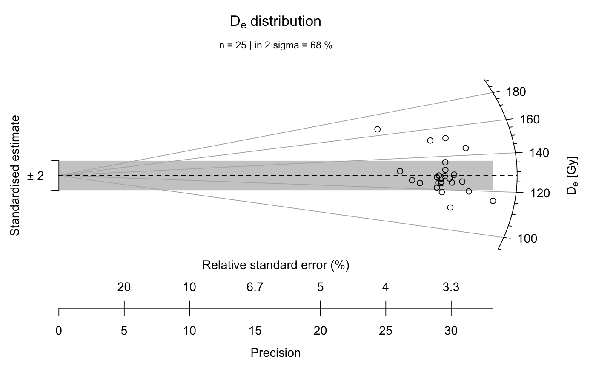
## now with linear z-scale
plot_RadialPlot(
data = ExampleData.DeValues,
log.z = FALSE)
## now with output of the plot parameters
plot1 <- plot_RadialPlot(
data = ExampleData.DeValues,
log.z = FALSE,
output = TRUE)
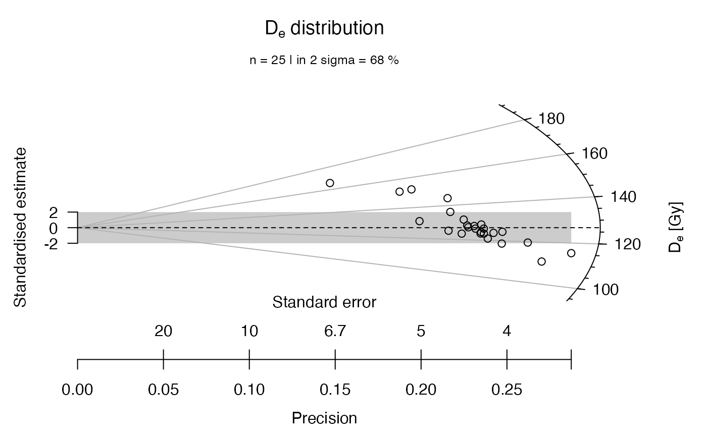
plot1
#> $data
#> $data[[1]]
#> De error z se z.central precision std.estimate std.estimate.plot
#> 1 151.48 5.334 151.48 5.334 126.8469 0.1874766 4.61813168 4.61813168
#> 2 152.08 5.144 152.08 5.144 126.8469 0.1944012 4.90534883 4.90534883
#> 3 165.80 6.805 165.80 6.805 126.8469 0.1469508 5.72419021 5.72419021
#> 4 136.15 4.608 136.15 4.608 126.8469 0.2170139 2.01890503 2.01890503
#> 5 144.42 4.642 144.42 4.642 126.8469 0.2154244 3.78567738 3.78567738
#> 6 123.44 4.471 123.44 4.471 126.8469 0.2236636 -0.76199634 -0.76199634
#> 7 123.64 4.227 123.64 4.227 126.8469 0.2365744 -0.75866705 -0.75866705
#> 8 127.07 4.396 127.07 4.396 126.8469 0.2274795 0.05075395 0.05075395
#> 9 125.06 4.630 125.06 4.630 126.8469 0.2159827 -0.38593642 -0.38593642
#> 10 124.45 4.256 124.45 4.256 126.8469 0.2349624 -0.56317801 -0.56317801
#> 11 118.60 4.049 118.60 4.049 126.8469 0.2469746 -2.03677096 -2.03677096
#> 12 128.08 4.408 128.08 4.408 126.8469 0.2268603 0.27974464 0.27974464
#> 13 110.78 3.701 110.78 3.701 126.8469 0.2701972 -4.34122821 -4.34122821
#> 14 121.02 4.187 121.02 4.187 126.8469 0.2388345 -1.39166124 -1.39166124
#> 15 124.09 4.129 124.09 4.129 126.8469 0.2421894 -0.66768845 -0.66768845
#> 16 124.70 4.043 124.70 4.043 126.8469 0.2473411 -0.53101302 -0.53101302
#> 17 123.68 4.262 123.68 4.262 126.8469 0.2346316 -0.74305153 -0.74305153
#> 18 126.34 4.228 126.34 4.228 126.8469 0.2365184 -0.11988780 -0.11988780
#> 19 128.59 4.254 128.59 4.254 126.8469 0.2350729 0.40975890 0.40975890
#> 20 131.46 4.448 131.46 4.448 126.8469 0.2248201 1.03712104 1.03712104
#> 21 127.77 4.330 127.77 4.330 126.8469 0.2309469 0.21319039 0.21319039
#> 22 131.05 5.023 131.05 5.023 126.8469 0.1990842 0.83677372 0.83677372
#> 23 126.34 4.317 126.34 4.317 126.8469 0.2316423 -0.11741617 -0.11741617
#> 24 115.49 3.479 115.49 3.479 126.8469 0.2874389 -3.26441093 -3.26441093
#> 25 119.58 3.815 119.58 3.815 126.8469 0.2621232 -1.90481930 -1.90481930
#>
#>
#> $data.global
#> De error z se z.central precision std.estimate std.estimate.plot
#> 1 151.48 5.334 151.48 5.334 126.8469 0.1874766 4.61813168 4.61813168
#> 2 152.08 5.144 152.08 5.144 126.8469 0.1944012 4.90534883 4.90534883
#> 3 165.80 6.805 165.80 6.805 126.8469 0.1469508 5.72419021 5.72419021
#> 4 136.15 4.608 136.15 4.608 126.8469 0.2170139 2.01890503 2.01890503
#> 5 144.42 4.642 144.42 4.642 126.8469 0.2154244 3.78567738 3.78567738
#> 6 123.44 4.471 123.44 4.471 126.8469 0.2236636 -0.76199634 -0.76199634
#> 7 123.64 4.227 123.64 4.227 126.8469 0.2365744 -0.75866705 -0.75866705
#> 8 127.07 4.396 127.07 4.396 126.8469 0.2274795 0.05075395 0.05075395
#> 9 125.06 4.630 125.06 4.630 126.8469 0.2159827 -0.38593642 -0.38593642
#> 10 124.45 4.256 124.45 4.256 126.8469 0.2349624 -0.56317801 -0.56317801
#> 11 118.60 4.049 118.60 4.049 126.8469 0.2469746 -2.03677096 -2.03677096
#> 12 128.08 4.408 128.08 4.408 126.8469 0.2268603 0.27974464 0.27974464
#> 13 110.78 3.701 110.78 3.701 126.8469 0.2701972 -4.34122821 -4.34122821
#> 14 121.02 4.187 121.02 4.187 126.8469 0.2388345 -1.39166124 -1.39166124
#> 15 124.09 4.129 124.09 4.129 126.8469 0.2421894 -0.66768845 -0.66768845
#> 16 124.70 4.043 124.70 4.043 126.8469 0.2473411 -0.53101302 -0.53101302
#> 17 123.68 4.262 123.68 4.262 126.8469 0.2346316 -0.74305153 -0.74305153
#> 18 126.34 4.228 126.34 4.228 126.8469 0.2365184 -0.11988780 -0.11988780
#> 19 128.59 4.254 128.59 4.254 126.8469 0.2350729 0.40975890 0.40975890
#> 20 131.46 4.448 131.46 4.448 126.8469 0.2248201 1.03712104 1.03712104
#> 21 127.77 4.330 127.77 4.330 126.8469 0.2309469 0.21319039 0.21319039
#> 22 131.05 5.023 131.05 5.023 126.8469 0.1990842 0.83677372 0.83677372
#> 23 126.34 4.317 126.34 4.317 126.8469 0.2316423 -0.11741617 -0.11741617
#> 24 115.49 3.479 115.49 3.479 126.8469 0.2874389 -3.26441093 -3.26441093
#> 25 119.58 3.815 119.58 3.815 126.8469 0.2621232 -1.90481930 -1.90481930
#> NA
#> 1 1
#> 2 1
#> 3 1
#> 4 1
#> 5 1
#> 6 1
#> 7 1
#> 8 1
#> 9 1
#> 10 1
#> 11 1
#> 12 1
#> 13 1
#> 14 1
#> 15 1
#> 16 1
#> 17 1
#> 18 1
#> 19 1
#> 20 1
#> 21 1
#> 22 1
#> 23 1
#> 24 1
#> 25 1
#>
#> $xlim
#> [1] 0.0000000 0.2874389
#>
#> $ylim
#> [1] -16.89313 20.48846
#>
#> $zlim
#> [1] 93.89862 191.06569
#>
#> $r
#> [1] 0.3043386
#>
#> $plot.ratio
#> [1] 0.8181818
#>
#> $ticks.major
#> tick.x1.major tick.x2.major tick.y1.major tick.y2.major
#> [1,] 0 0.2909708 0.2953353 -7.811659 -7.928834
#> [2,] 0 0.3034125 0.3079637 -2.077431 -2.108592
#> [3,] 0 0.3009624 0.3054768 3.958593 4.017971
#> [4,] 0 0.2846227 0.2888920 9.436128 9.577670
#> [5,] 0 0.2601617 0.2640641 13.828402 14.035828
#>
#> $ticks.minor
#> tick.x1.minor tick.x2.minor tick.y1.minor tick.y2.minor
#> [1,] 0.2860110 0.2880130 -9.1085584 -9.1723183
#> [2,] 0.2909708 0.2930076 -7.8116592 -7.8663408
#> [3,] 0.2952874 0.2973544 -6.4511101 -6.4962679
#> [4,] 0.2988580 0.3009500 -5.0348264 -5.0700701
#> [5,] 0.3015911 0.3037022 -3.5729147 -3.5979251
#> [6,] 0.3034125 0.3055364 -2.0774306 -2.0919726
#> [7,] 0.3042709 0.3064008 -0.5619535 -0.5658872
#> [8,] 0.3041414 0.3062704 0.9589928 0.9657057
#> [9,] 0.3030279 0.3051491 2.4706214 2.4879158
#> [10,] 0.3009624 0.3030691 3.9585925 3.9863027
#> [11,] 0.2980026 0.3000886 5.4096745 5.4475422
#> [12,] 0.2942277 0.2962873 6.8122870 6.8599730
#> [13,] 0.2897328 0.2917609 8.1568798 8.2139780
#> [14,] 0.2846227 0.2866150 9.4361279 9.5021808
#> [15,] 0.2790061 0.2809591 10.6449512 10.7194659
#> [16,] 0.2729905 0.2749014 11.7803885 11.8628512
#> [17,] 0.2666778 0.2685445 12.8413657 12.9312553
#> [18,] 0.2601617 0.2619828 13.8284022 13.9252010
#> [19,] 0.2535254 0.2553001 14.7432926 14.8464957
#> [20,] 0.2468413 0.2485692 15.5887963 15.6979178
#>
#> $labels
#> label.x label.y label.z.text
#> [1,] 0.2996999 -7.928834 100
#> [2,] 0.3125149 -2.108592 120
#> [3,] 0.3099912 4.017971 140
#> [4,] 0.2931614 9.577670 160
#> [5,] 0.2679665 14.035828 180
#>
#> $polygons
#> [,1] [,2] [,3] [,4] [,5] [,6] [,7] [,8]
#> [1,] 0 0 0.2874389 0.2874389 -2 2 2 -2
#>
#> $ellipse.lims
#> [,1] [,2]
#> [1,] 0.2454165 0.3043385
#> [2,] -9.3850740 15.7603529
#>
plot1$zlim
#> [1] 93.89862 191.06569
## now with adjusted z-scale limits
plot_RadialPlot(
data = ExampleData.DeValues,
log.z = FALSE,
zlim = c(100, 200))
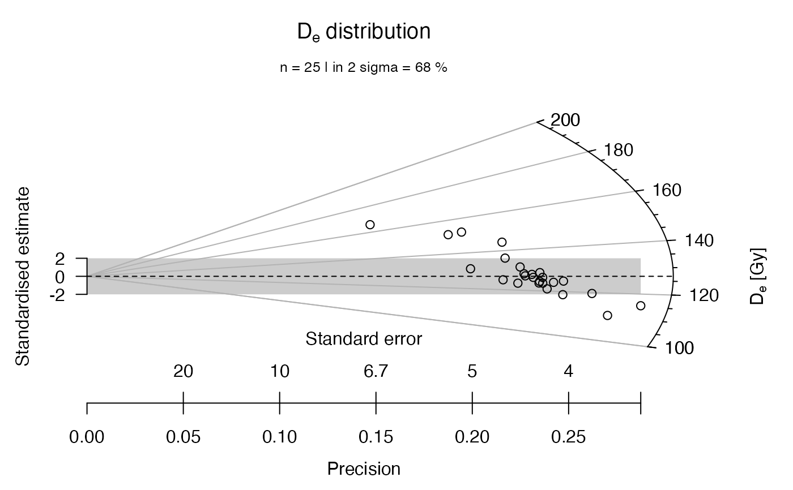
## now the two plots with serious but seasonally changing fun
#plot_RadialPlot(data = data.3, fun = TRUE)
## now with user-defined central value, in log-scale again
plot_RadialPlot(
data = ExampleData.DeValues,
central.value = 150)
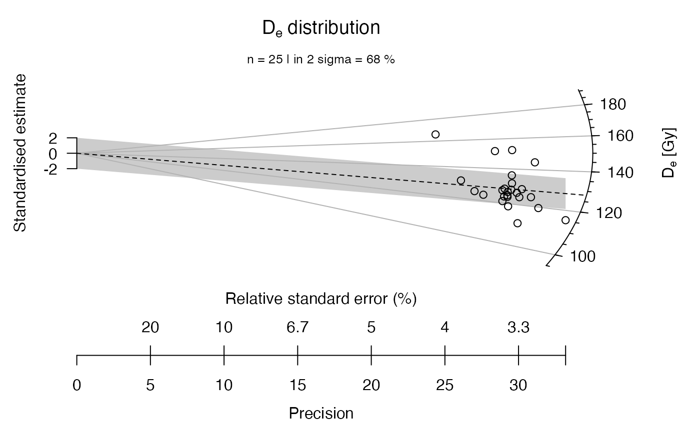
## now with a rug, indicating individual De values at the z-scale
plot_RadialPlot(
data = ExampleData.DeValues,
rug = TRUE)
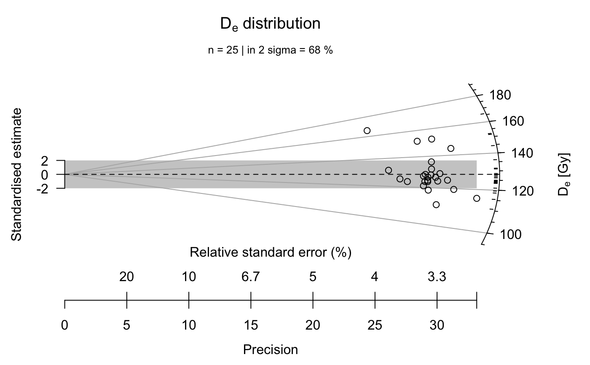
## now with legend, colour, different points and smaller scale
plot_RadialPlot(
data = ExampleData.DeValues,
legend.text = "Sample 1",
col = "tomato4",
bar.col = "peachpuff",
pch = "R",
cex = 0.8)
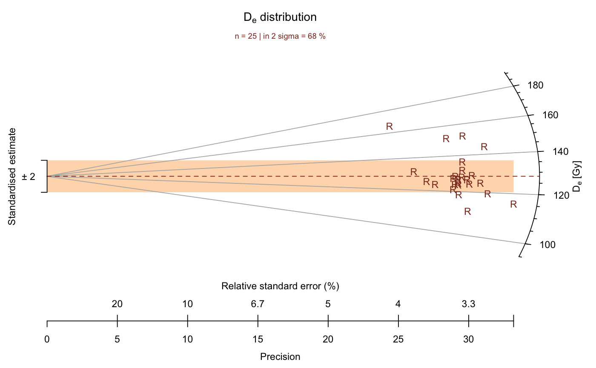
## now without 2-sigma bar, y-axis, grid lines and central value line
plot_RadialPlot(
data = ExampleData.DeValues,
bar.col = "none",
grid.col = "none",
y.ticks = FALSE,
lwd = 0)
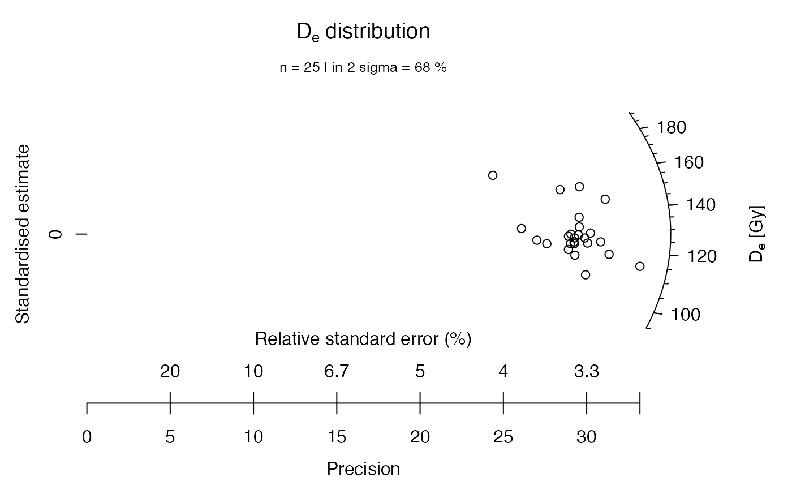
## now with user-defined axes labels
plot_RadialPlot(
data = ExampleData.DeValues,
xlab = c("Data error (%)", "Data precision"),
ylab = "Scatter",
zlab = "Equivalent dose [Gy]")
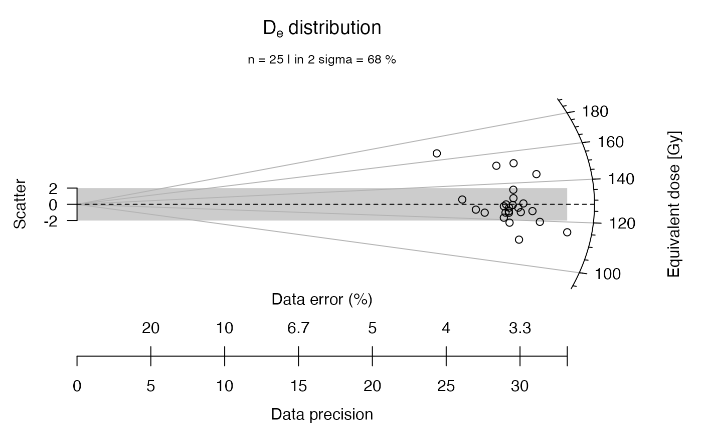
## now with minimum, maximum and median value indicated
plot_RadialPlot(
data = ExampleData.DeValues,
central.value = 150,
stats = c("min", "max", "median"))
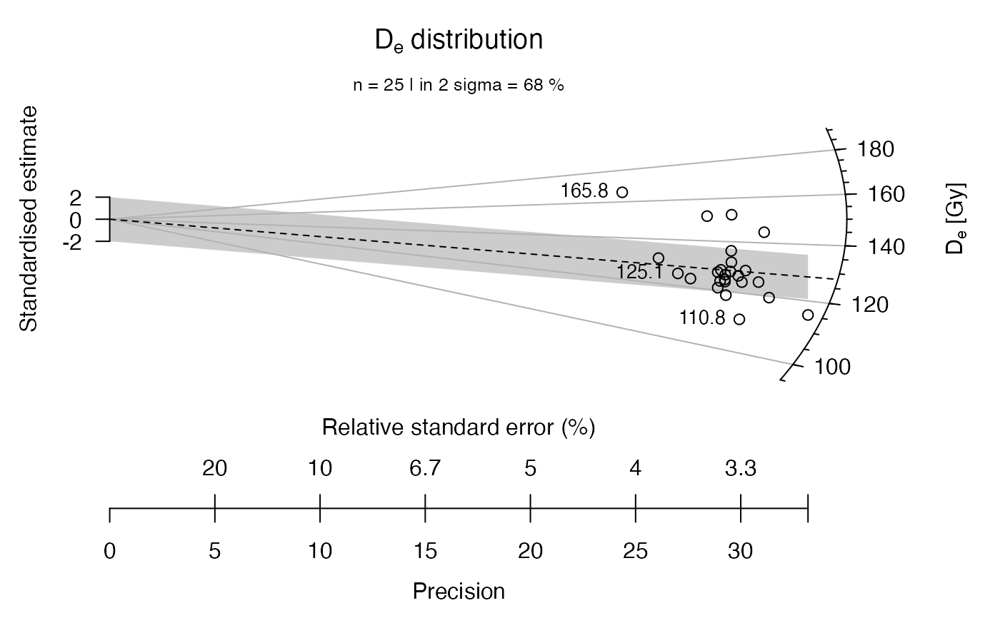
## now with a brief statistical summary
plot_RadialPlot(
data = ExampleData.DeValues,
summary = c("n", "in.2s"))
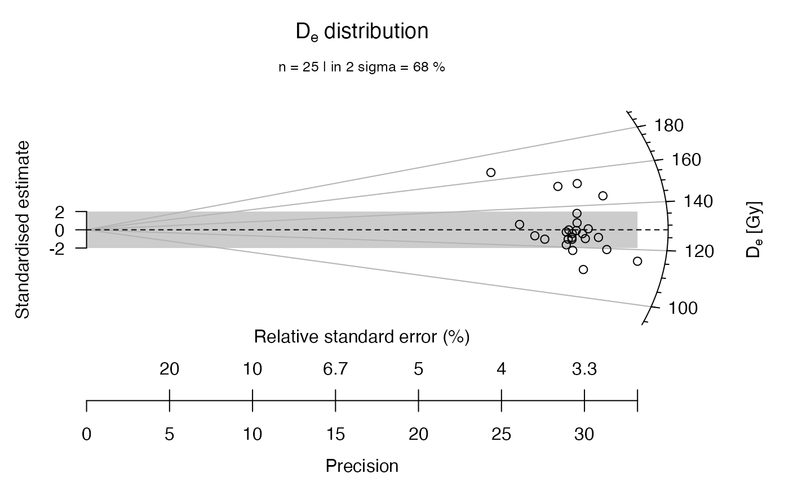
## now with another statistical summary as subheader
plot_RadialPlot(
data = ExampleData.DeValues,
summary = c("mean.weighted", "median"),
summary.pos = "sub")
## now the data set is split into sub-groups, one is manipulated
data.1 <- ExampleData.DeValues[1:15,]
data.2 <- ExampleData.DeValues[16:25,] * 1.3
## now a common dataset is created from the two subgroups
data.3 <- list(data.1, data.2)
## now the two data sets are plotted in one plot
plot_RadialPlot(data = data.3)
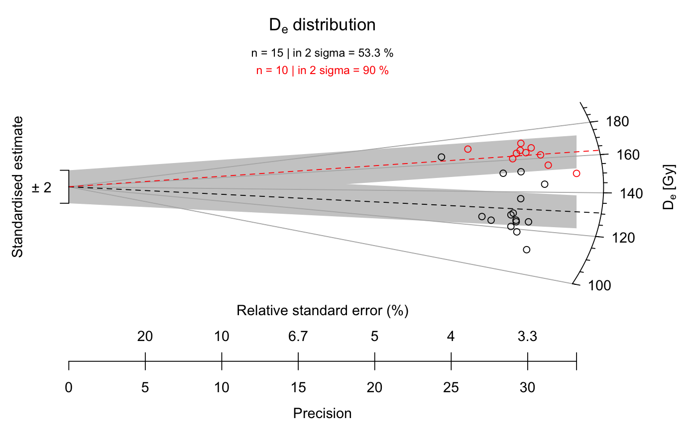
## now with some graphical modification
plot_RadialPlot(
data = data.3,
col = c("darkblue", "darkgreen"),
bar.col = c("lightblue", "lightgreen"),
pch = c(2, 6),
summary = c("n", "in.2s"),
summary.pos = "sub",
legend = c("Sample 1", "Sample 2"))
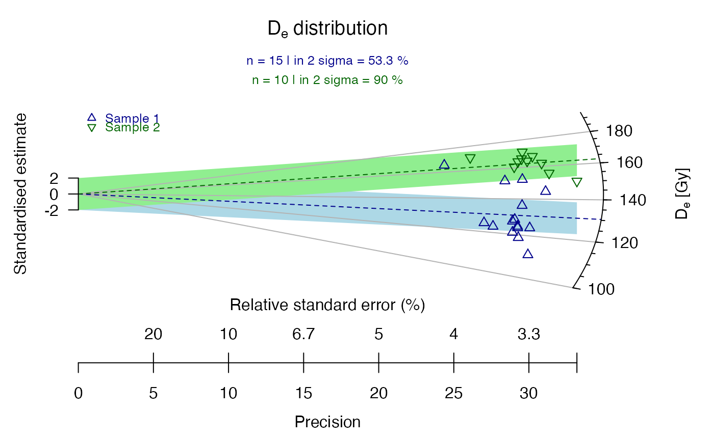